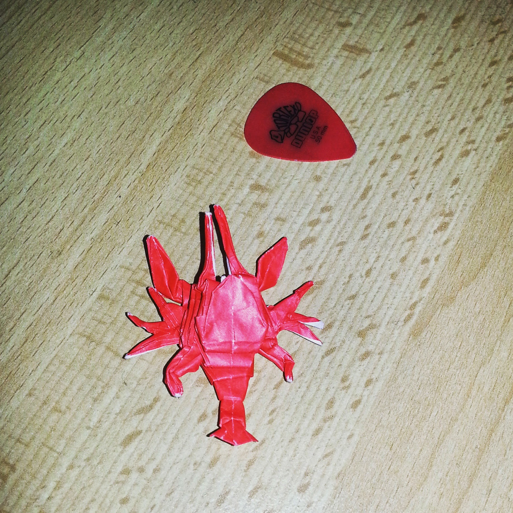
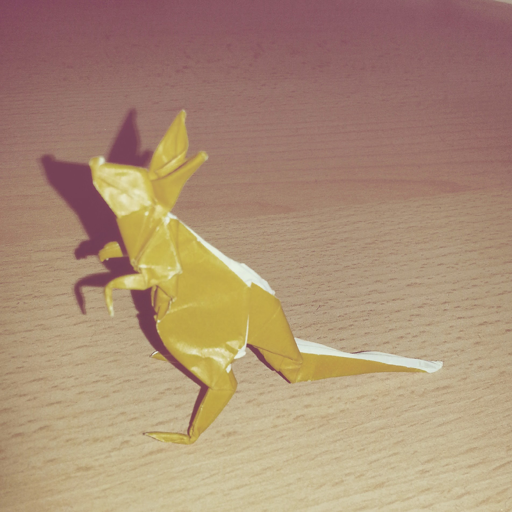
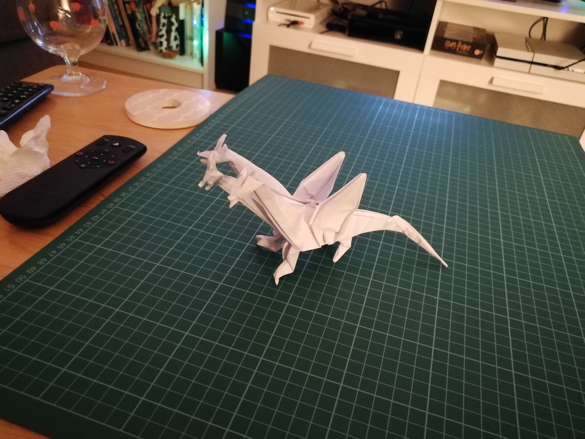
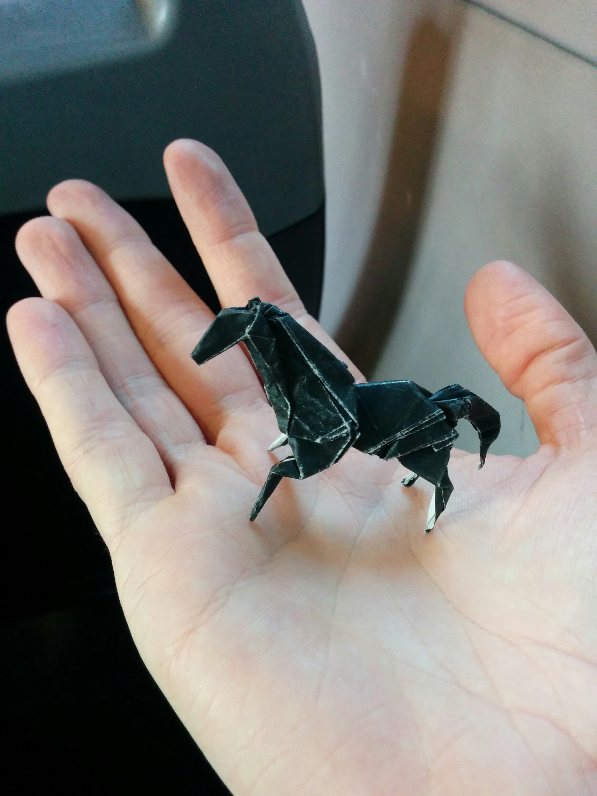

Hello, and welcome to my portfolio page. Watch this space as I add more, once I've learnt some more code.
- This is the HTML Scrapbook, where I first put some HTML together. It looks disgusting, but it's helping me to learn
- Here is a bit of JavaScript that works out how much you'd save by getting a bus season pass instead of day savers
- This i a solution I wrote to a challenge in this fantastic ebook by Kyle Simpson
Here is some of the stuff that I've done so far:
A little about me
Hi, my name is Stephen Whittaker and I started the coding bootcamp at Manchester Codes at the start of September, which I am working on right now. I like figuring out how things work and making processes more efficient. I'm looking forward to writing code that will do useful stuff, silly stuff and ideally make some products that help people and that they enjoy using.
I play the drums, read quite a bit (usually a wide range of stuff but it's mostly code right now!) and play roguelike platformer games obsessively. I like installing weird mods on games and tinkering with stuff until it breaks (then spending hours fixing it). I have a couple of Raspberry Pis, which I'm excited to come up with some projects for.
These are a few bits of origami I've made:
A lobster, with plectrum for scale
A kangaroo
A dragon with three heads
A horse